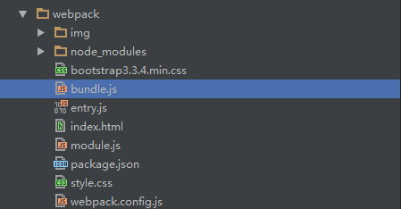
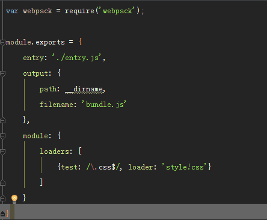
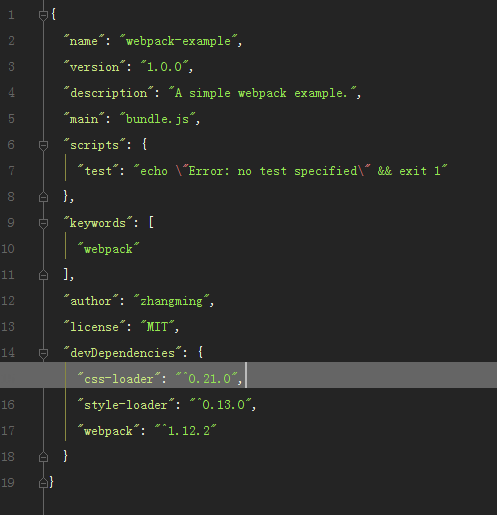

Webpack 字面很容易理解，就是针对web资源进行自动化打包、资源整合，优化配置，在传统形式的开发中,网页中会包含多个样式文件及js、大量图片等，通过webpack我们就可以对这些资源有效的管理。
项目示例目录结构

webpack.config.js 是webpack的项目启动配置文件,webpack 默认只是对js 进行打包，如果想对css 文件配置，在js 文件中添加require("./style.css") ，需要通过安装额外Loader插件(css、style)，参看package.json 文件配置。webpack 执行后
css 以style 标签的形式插入html 网页中。

package.json 文件配置
